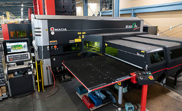
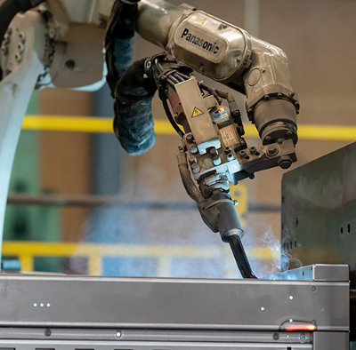
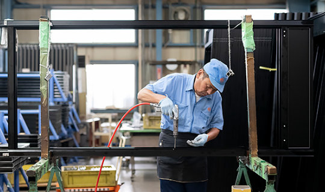

EST. 1938 — TOCHIGI, JAPAN
01 / PRECISION SHEET METALSCROLL TO EXPLORE ↓
NAGAMURA MANUFACTURING CO.
01 / THE IDEAWHAT WE DO
THE INTEGRATED APPROACH
一枚の板から、
社会を支える形へ。
長村製作所は、精密板金加工を軸に、試作・単品・量産に柔軟に対応。綿密なお打ち合わせを重ね、設計・開発・製造から塗装・検査・出荷まで一貫して取り組みます。
一貫生産体制について ↗DESIGNFABRICATIONCOATINGINSPECTIONDELIVERY
02 / CAPABILITIESTECHNOLOGY
技術を、
次の解決へ。
設備と職人の経験が交わる現場。大型製品から繊細な加工まで、用途に合わせた方法で応えます。

金属板金加工
複合機・NCタレパン・NCベンダーを用いた加工

各種溶接加工
素材と用途に合わせた、美しさと強度の追求

組立・検査
箱物板金製品の社内組立と丁寧な品質確認
FROM NAGAMURA